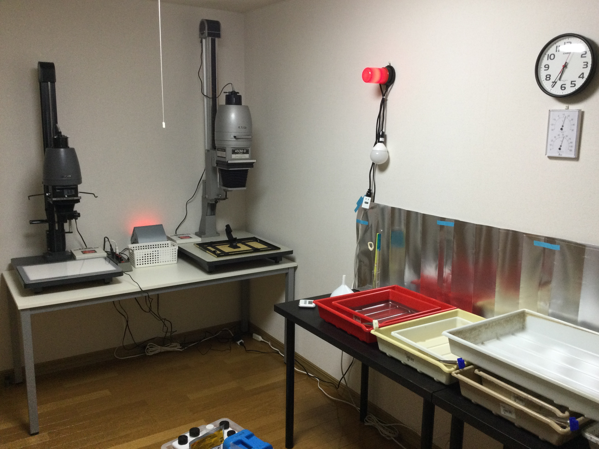

I take pictures with various old and not-so-old film cameras, develop the film in the kitchen and print the photographs in a darkroom.
Born: Perth, Australia.
Resides: Tokyo & Akita, Japan.
Works: Economist.
Photographs with: 135, 120 and 4x5 film cameras, mostly loaded with Tri-X.
Enlarges with: Lucky 90M-D, 450M-D.
Favourite photo chemicals include: Fujifilm Super Prodol (SPD), Papitol.
Admirer of: Hiroshi Hamaya, Bill Brandt, Garry Winogrand, Shomei Tomatsu, Andreas Gursky, Daido Moriyama, Nobuyoshi Araki, Alfred Stieglitz who edited a quarterly journal called Camera Work, Robert Frank, Sebastiao Salgado, Michael Marten, Shinya Arimoto, Edward Burtynsky, Ihei Kimura, Rennie Ellis, Issei Suda, Josef Koudelka, Walker Evans, Kazuo Kitai, Jun Abe, Raghubir Singh, Robert Adams, John Gossage, Tish Murtha.
All images on this site are analogue photographs scanned from negative or positive film, or darkroom prints, with the exception being some photographs listed under Moth Sailing. I’m not enamoured with digitising negatives or prints, so most are a rough snap of the original done with a tablet.
I recently wrote this about my interest in photography.
Previously I posted camera work and related information here.